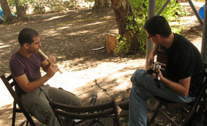
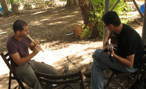

רוקני כיסייך מאבנים
מלאי במקום אבק קסמים
נשמי רווחה אירזי תיקים
נפשך הכיני לדרכים
השכימי קום קראי בקול
הקיצי שנת התרנגול
לקטי נוצות בהלתו
כעת, בקשי את סליחתו
שזרי כנפיים לגבך
איתן תעופי לאיטך
רחוק הרחק מן ההמון
לאדמת שלווה ברוכת דמיון
משם כיתבי לי מכתבים
ספרי משל בשלל צבעים
סיפור על ילד שמצא
את שלוותו בהלצה
מחה דמעה שחוקת שנים
כאב הפך לאבנים
אותן הניח בכיסייך
בעת כתב הוא את שירייך
היי! קוראים לי אסף כץ, נולדתי ב-16 לנובמבר, 1987 ובינתיים מרוצה מאוד.
לפני עשור, גיליתי כלי נגינה קטן מפלסטיק שמתקפל ונכנס לכיסים העונה לשם חלילית, ומאז הוא (או בני דודיו) באים איתי לכל מקום אליו אני הולך. שיכור מהחופש שיש לצינורות המנוקבים האלה להציע, לדופק המואץ שבלעמוד מול זרים בליבו של פסטיבל ולאלתר את עצמי לדעת.
לא למדתי מוזיקה באופן מסודר, ועד היום זה עבד בשבילי, כי זה הכריח אותי ללמוד לאלתר ולסמוך על האוזניים.
היום אני מנגן ושר ביחד עם מוטי זילברמן ולוטם בקס בהרכב "תלת אופן". יש לי זכות ענקית וכבוד גדול לעבוד עם שני המוזיקאים המוכשרים האלה.
מלבד המוזיקה, אני עוסק ומתפרנס כרגע מתכנות, שזה תחום מסתורי ומלא ביצירתיות, ומסתבר שאני אוהב אותו מאוד.
יש מישהי מאוד מיוחדת בשבילי, שהיא כמו אחות קטנה לי. מעולם לא פגשתי אותה אבל היא מכירה אותי יותר מכולם. כי היא מכירה את העולם שלי, והעולם שלה דומה, כל כך עד שאני מוכן להמר שהם שכנים. והיינו מחליפים מכתבים. יום אחד באמצע מכתב, כתבתי לה את השיר הזה.
זה סיפור, מכתב של ילד שכותב לילדה, המדריך אותה מה עליה לעשות כדי לעוף לעולם אחר. הוא מתחיל בצעד ראשון : מי שרוצה ללמוד לעוף חייב לרוקן את הכיסים שלו מאבנים. זה הגיון בריא. לרוב המבוגרים יש אבנים בכיסים, לי למשל יש אבן שאספתי כשפגעתי במישהי שמאוד עזרה לי ואחת אחרת כשלא הייתי מוכן לסלוח לעצמי יום אחד כשעמדתי מול הים.
הצעד השני הוא שאנחנו שחייבים ליצור את הכנפיים של עצמנו. צריך להשיג נוצות ולשזור מהם כנפיים והנוצות הכי טובות הן של תרנגול, אבל רק כאלה שנפלו לו. אז הטריק הוא לקום ממש ממש מוקדם בבוקר ולהבהיל תרנגול רגע לפני שהוא מקרקר את הקרקור הראשון שלו. ואז אוספים את כל מה שנפל מהר מהר וכמובן מבקשים סליחה יפה. וזהו. צאי לדרך ילדה.
ו.. כשאת שם, אם את כבר שם, כתבי לי בחזרה, וספרי לי על הילד שאני, ספרי לי כמה טוב לו כשהוא מרפה מהכל בחיוך של חופש, בצחוק אדיר. ואת תביני.. כשתהיי שם, את תביני, שהייתי אני זה ששם את האבנים בכיסיך, כשניסיתי למנוע אותן ממך.
בדיסק הזה: האישה מהחלומות
{kind=link}